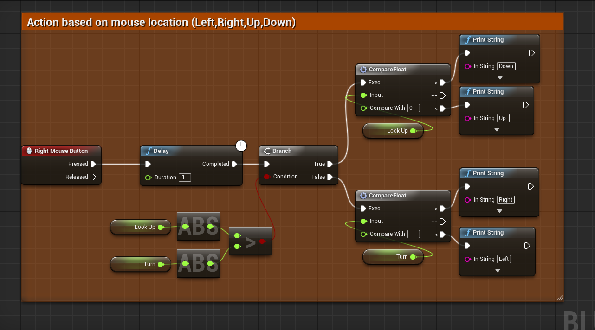

Actions Based on Mouse Movement

Authored by: Adam Davis
Overview
There has been an increase in kinetic games in recent years, and with this upswing an increased need to track physical movements. One way to simulate that is to get the mouse's location and determine which direction it is moving. The good news is this is extremely easy to set up and can have wide ranging applications. One example would be to set up 4 different melee attacks: an overhead swing, a normal swing, a backhanded swing, and an upwards swing. Which animation is called would depend on which direction the mouse moved, and can be combined with things such as .csv datatables to determine damage and animation speed based on type of swing performed.
Steps to recreate
- Make an input, in my case I use RMB as an attack button. I highly recommend using a mouse button for this as it is very intuitive.
- Add a delay with a very low value (.1 works well). This gives you a brief delay between pressing the button and the check to give an accurate depiction of which way the mouse is moving.
-
This branch checks to make sure that the mouse is moving. If the turn rate is greater than the lookup rate, it will register right or left, if the lookup rate is higher than the turn rate, it will register up or down. This gives you four distinct quadrants that you can work with.
Note: Both turn and lookup are float variables set to 0.0. You will want to set these based on your mouse input axis values so they are altered by the values input in the mouse. - If Look Up ends up being greater than Turn, compare Look Up and 0, if LookUp is > 0, it is going Up (or Down if, like me, you have inverted controls set up), if it is < 0, print the opposite.
- Do the same thing off of the "false" branch, this time checking your Turn input for Left or Right.
It is that simple, once you get this set up you can quickly iterate and alter the functions to suit your needs!